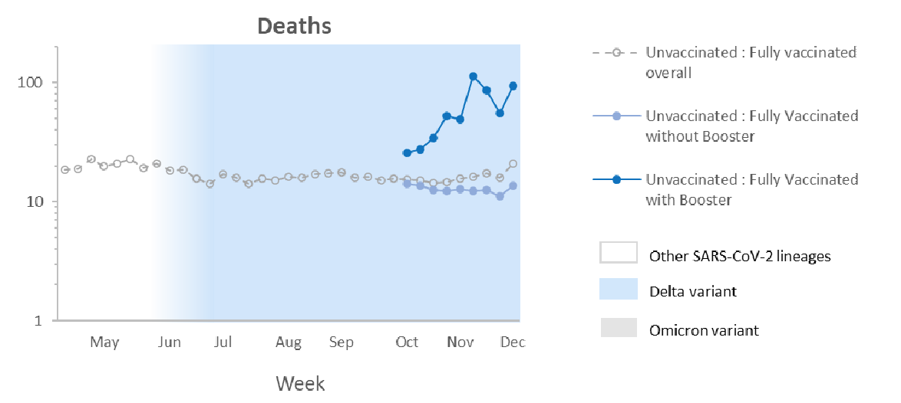
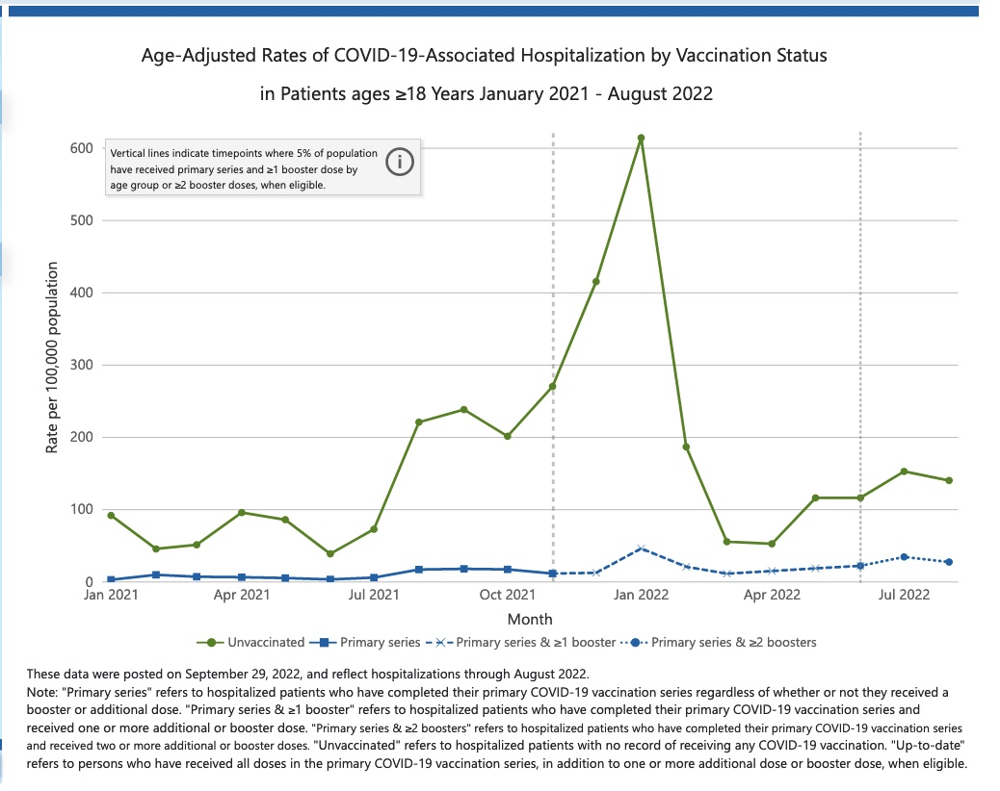
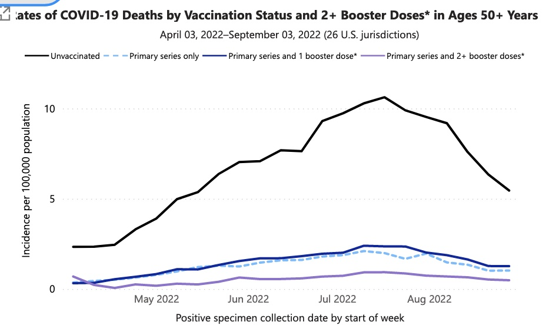

Table of Contents
1. はじめに
コロナワクチンの有効性について疑問の声がネット上に多くあります。自分や家族のワクチン接種をどうするか決める必要があるので、自分なりに信頼できる情報を探してみました。
信用できる情報は何があるのかと考えたとき、まずは米国CDC(Centers for Disease Control and Prevention)の公開数値は、他のどの情報よりも信用できると思います。そしてそれらの数値を元にした推奨情報は、少なくともロジックとして納得できるでしょう(賛同するかは別として)。というわけで、CDCの公開情報にあたることにします。
2. CDC公開時事調査メモ
2.1. 一般の有効性
デルタ株、オミクロン株出現期での未ワクチン、2回接種、ブースター接種それぞれのグループでの死亡率についてのCDCのレポートです。掲載。
- 2021年の間に、未ワクチンと2回接種の感染率比(case IRR)はデルタ前の13.9からデルタ出現期の8.7、デルタ蔓延期の5.1に低下した
- Note: case IRR=5.1の場合、未ワクチングループは2回接種グループよりも5.1倍感染率が高い。IRRはIncidence Rate Ratioの略で、異なるグループ間の発生率の比を意味する統計用語
- 2021年12月のオミクロン出現期になると、未ワクチンとの感染率のIRRはブースターありに対して4.9、2回接種だと2.8となった
- 10-11月の間に、未ワクチンに対する、年齢で標準化した(age-standardized)死亡率のIRRはブースターあり53.2、2回接種で12.7だった
- ブースターは3回目のワクチンの種類によらず効果的で、年齢が上がるほど(特に65歳以上のグループで)顕著だった
- オミクロン出現期(以降)の、ワクチンの死亡率に対する影響はまだ評価できていない

オミクロン出現期には、ワクチンの感染予防の効果はだいぶ低下したようです。この時期の重症化(死亡)予防はまだデータ無しとのことでわかりません。これが見たかったのですが。。。
上のグラフからわかるように、オミクロンより前のデータですが、ワクチンの死亡率に対する効果は、2回接種グループの未ワクチングループに対するIRRがコンスタントに10以上と、非常に高いことがわかります。ブースターありだとこれが更に50以上になったりしますが、時間とともに効果が薄れるようで微妙です。
Rates of laboratory-confirmed COVID-19 hospitalizations by vaccination status (CDC)
( アップデート)  ワクチン未接種と2回以上接種グループの入院率の比較です。オミクロンになっても、ワクチンは重症化予防に効果的な結果が出ています。最近では(?)2回接種のことをprimary seriesと言うんですね。
Rates of COVID-19 Cases and Deaths by Vaccination Status (CDC)
( アップデート)  こちらは50歳以上ですが、ワクチン接種ステータスと死亡率の比較です。こちらも、オミクロンに対してもワクチンは有効という結果です。ブースター1回だけだと2回接種と比べてあまり変わりませんが、2回なら差が出ています。CDCが認可されたブースターを常に打ち続けることを推奨しているのはこのためですね。
2.2. 子供に対する有効性
5-17歳の子供の重症化に対するワクチンの有効性についてのCDCのレポートです。掲載。
- オミクロンに対して、ワクチン2回目接種後150日以上経った12-17歳の子ども達への感染防止効果は無かった
- 2回目接種後150日以上経った12-17歳の子供への入院(つまり重症化)に対する効果は73〜88%と高い。150日未満は90%以上だが、統計的には経過日数で有意な差無し
2.3. ワクチンの安全性
COVID-19 Vaccination and Non–COVID-19 Mortality Risk… 掲載
- ワクチン1回目および2回目接種後7日間の調整後の死亡リスクは、未ワクチンのグループに対してそれぞれ0.34と0.49だった
- 本来は差が出ない(1になる)はずだが、ワクチンを打った人は打たない人よりも生来的に健康な人たちであるか、危険なことに従事していないためと推測される
- 12-17歳のグループでは、ワクチン接種者と未接種者のグループ間で死亡リスクに差は出なかった
日本人的には信じがたい考察が書いてありますが、アメリカでは健康志向な人とそうでない人の差が極端なので、ワクチンを打ったほうが死ににくい結果となったことに、それほど違和感はありません。
むしろ、大人に対しての死亡リスクの比較は意味がなかったという結論と思います。子供のリスクで差が出ていないので、大人も差がないと考えていいとは思いますが。。。
Safety of COVID-19 Vaccines (CDC) Updated.
- ワクチンのよくある副作用は、発熱、頭痛、倦怠感、筋肉痛、悪寒、吐き気、注射した付近のふくれ、赤くなること、痛みなど
- 長期的な健康問題を起こす重篤な問題はごくまれ。ワクチンのメリットは既知および可能性のあるリスクを上回る
それで、どの程度重篤な副作用が出るリスクがあるのか、というのが次の記事です。
Reported Adverse Events (CDC) Updated.
- アナフィラキシー - 100万件あたり約5件
- 血小板減少を伴う血栓症(TTS) - Johnson & Johnson後。1840万件中57件が確認された。死亡は9件
- ギランバレー症候群 - Johnson & Johnson後。免疫が神経細胞を攻撃し、筋肉を弱くしたり麻痺を起こす。1840万件中暫定報告されたのは303件。ファイザーやモデルナよりも21倍多い
- 心筋炎、心膜炎 - 2/24/2022までに30歳以下で2261件の暫定報告。若い男性や思春期の男子が大半。多くは治療などにより良くなっている
- 死亡報告 - 5億5300万件中12,775件(0.0023%)の暫定報告あり。ワクチンが原因であるかレビュー中
どれも恐ろしい副作用ですが、発生率を考えると、ワクチンのメリットはリスクを大きく上回るというCDCの推奨は間違っていないように思います。
3. CDC以外の情報
3.1. 小島勢二医師のYoutubeメッセージ
2時間40分に渡る長い動画ですが全部見てしまいました。科学者としての立場から、日本のワクチン方針に対する疑問を比較的たんたんと提示しています。
- オミクロン期になってから日本ではコロナによる(子供の?)死者数はゼロ。現在はオミクロンを主眼に考えるべき
- 厚労省の発表しているワクチン有効性のデータは疑わしいかもしれない。CDCのデータから乖離が大きく、極端に有効な数値が出ている
- 浜松の公開データを自分で分析したところ、むしろCDCのデータに近い傾向を示した
- ワクチンは免疫力を低下させ、自己免疫/自己抗体が起きて心筋炎などの症状があらわれるリスクがある。完全に安全なわけではない
- ワクチンを打つようになってから超過死亡が明らかに増えている。ワクチン起因以外に説明できるのか
- ごく一部のアナフィラキシーを除き、コロナワクチンの副作用は全く認定されていない。医者から見て納得できないケースも多い
- 5-11歳の子供にワクチンを推奨する強い理由は無いように思われる
厚労省の公開情報や推奨事項、副作用認定には恣意的なものが感じられるという主張には説得力があります。CDCがやっているように、リスクをきちんと提示した上で、メリットがリスクを大きく上回るというロジックにすべきと思います。また、恣意的な非認定は、疑念を抱かせるだけなので、止めたほうがいいように思います。
一方で、現在はオミクロンを念頭にすべきという意見はよくわかりません。オミクロンの傾向が今後もずっと続くとは言えず、再び強毒化した株(variant)が出現したときのリスクも考えておくべきではないでしょうか。
3.2. ワクチンの長期的影響
COVID-19のワクチンが比較的新しいもので、認可プロセスも例外的であったために、世の中にCovidワクチンに対する不信感・不安が多いように思います。私の周りでも、長期的影響を心配する声をよく耳にします。ここでは、ワクチンの長期的な安全性とその根拠について調べてみます。
Will kids have long-term effects from the COVID-19 vaccine?
子供へのワクチン投与による長期的な影響を気にする母親からの質問に対する、MIT Medicalの記事です。
- 理論的には長期的な影響が出る可能性があるが、その可能性は他のあらゆる製品が持つ可能性と同様。つまり、一般的にサイエンスは絶対に無いことを証明できない
- しかし、どの程度起こりやすいか(probability)については言える。COVID-19のmRNAワクチンの場合、科学者も医療のプロたちも、長期的なリスクはとても、とても低いと信じている
- このアセスメントは、ワクチン全般に対してだけでなく、特にmRNAワクチンについてわかっていることを根拠としている
- ワクチンの副作用はよく知られていて、文書化されており、ほとんどが接種後8週間以内に起こる。遅れて悪影響が出たという主張は注意深く調査され、システマティックに間違った主張だと 証明されてきている
- mRNAに関して既知なことが、これら新しいワクチンが安全である根拠を補強している。mRNAはインフルエンザやジカ熱、狂犬病のワクチンで30年以上に渡り研究されてきている。
- ファイザーやモデルナのmRNAワクチンは、LNPエンベロープにつつまれたmRNA分子を含む。LNPは半減期が約2時間の脂肪のボールであり、細胞に入るまでmRNAを保護した後で自然に分解してしまう
- このmRNAは、SARS-CoV-2ウイルスの表面に見つかる、特定のスパイクプロテイン(それ自体は無害)を細胞に作らせるための説明書である。体内の細胞にこのスパイクプロテインを作らせたら、mRNAは分解して無くなってしまう。これらは、COVID-19に感染した場合に自然に体内で作られる抗体と同じ種類のものであり、実際にウイルスが侵入してきたときに戦えるように免疫システムを準備させる
- 2日もすればmRNAは無くなり、LNPエンベロープもとっくに無くなっている。将来的に問題を起こすものは何も残っていない。mRNAは細胞に侵入して無害なスパイクプロテインを作らせるが、DNAが入っている細胞核には決して入らないため、DNAに影響を与えることは不可能である。
- 医者や科学者はワクチンのリスクをとても低いと考えているが、COVID-19のリスクは子供にとってさえ、非常に現実的である。ほとんどの子供にとってCOVID-19はマイルドな病気だが、感染による悪影響のリスクは、ワクチンによる長期的な悪影響のリスクよりも高い。
- 例えば心筋炎はウイルスによる感染等で引き起こされる免疫反応の一つである。これはワクチンによっても起こりうるが、SARS-CoV-2ウイルスは多くの細胞タイプに侵入でき、非常に多くの遺伝子を持つために、ワクチンよりも自然感染によるリスクのほうがはるかに大きい
The Long-Term Safety Argument over COVID-19 Vaccines
Boston Reviewの良記事です。
- ワクチンに対する躊躇は多くの国で非常に深刻でコストの高い障害となっている
- 最も頑固なチャレンジは、ワクチンに対する長期的な安全性のデータが無いという主張であろう。最近のFDAの認可は拙速だと、foxnewsのような広く見られている放送メディアで言われている。mRNAの注射が、「新しい」技術であるという主張のために、この特定の怖れの主なターゲットとなっている。この新しさのために、長期的に我々にインパクトを与えるかもしれないかどうかを、正しく理解して判断するまでにもっと多くのデータが必要だ、という心配である。他の医療製品を規制するタイムラインと比べて、向こう見ずにファストトラックな認可が行われていると暗に言っている。
- いかなる新製品に対する安全性に自信を持つのに必要な時間は、問題となっている新たな治療法の種類によって大きく変わり得る。
- 特に長期的な安全性に対する研究はどうだろうか。慢性的な症状に対して毎日、毎週あるいは毎月与えられる薬品は時間が進むにつれて安全のデータを蓄積し、新たな調査結果が定期的に出版される。
- しかしワクチンに関して、状況は全く異なる。重要なのは、ワクチンは体の生物的機能を除いたり極端に弱めたりしないことである(これらはopportunisticな感染のリスクを上げうる)。更に、非常に長い期間を要する他の多くの薬物と対象的に、ワクチンは典型的にはせいぜい数回の介入(interventions)でしかない。
- 長期的な影響の原因となるのは、たった2つ: ワクチンの構成要素と、ワクチンの免疫反応 だけである。
- 前者に対して我々は、ワクチンに何の物質が含まれているかを正確に知っていて、それらの性質と安全性に関するプロファイルを詳細にかつ徹底的に理解している。
- 後者のリスクを理解するためには、体の中で何が起こっているかを理解する必要がある。Covid-19ワクチンに共通するのは、最初の注射後数日経ってT細胞の準備ができ(primed)、リンパ節から出て攻撃対象を探す。全身の抗体レベルが上がり、2回目の接種後スパイクプロテインの量を増やして親和性を増やす。これにより、免疫を高め、この特定の外部プロテインがよく遭遇するものであり、そのためまじめに取り扱う価値があると免疫システムが考えるようにしむける。
- この複雑で具体的なプロセスは何ヶ月も続く。しかし最終的にはそのスパイクプロテインの新たなコピーによる更なる刺激が無いことから、免疫反応は落ち着き、直接かつ一時的にウイルスと戦うエフェクター細胞の出現頻度は下がる。代わりにメモリー細胞ができて抗体をすぐに作る準備が整い、たまたま感染した際に再度呼び出されるまで端の方へ追いやられる。これが最終的なコロナウイルスに対する免疫となる。
- 予防接種の数週間後に血液内での抗体の集中がピークを迎え、その後ゆっくりと減り始める。この時点以降は免疫に関する深刻な合併症のリスクは増えない。実際には全く反対であり、3ヶ月後は実質的にゼロになる。
- これらワクチンの要注意期間として決まっている6ヶ月はとても保守的であり、5年、10年といった長期に渡る安全性に対する懸念は免疫システムの働きから見て全くナンセンスである。
4. 気になっていること
- オミクロンに対するワクチンの重症化予防効果はどの程度あるのか → 効果的な結果が出ています( updated)
- 数ヶ月で接種効果が減るのは重症化防止に対しても当てはまるか → オミクロンに対する効果が知りたいです
- 「時間が経つほど変異株の感染力は強まるが弱毒化する」は本当か → オミクロンでは、たまたまウイルスが活発になる部位が肺ではないだけのようにも思えます。この説は直感的ですが、その根拠がよくわかりません
5. 個人的な暫定結論
- ワクチンを2回打って時間が経っても、重症化防止に効果があるらしい
- 12歳以上であれば、オミクロン後も見据えた上で、重症化予防に期待して2回接種するのが良さそう
- ブースターは何度も打てるものでは無さそう。様子見したい